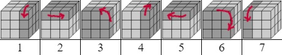
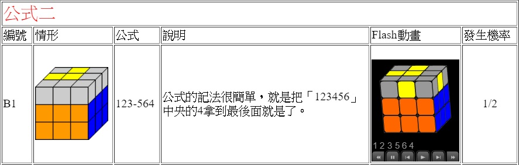
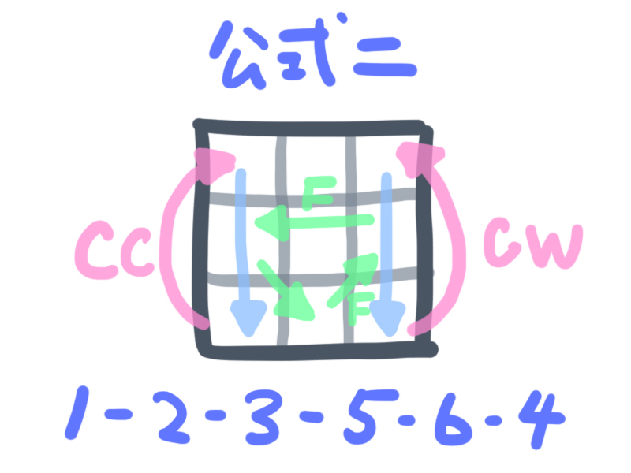
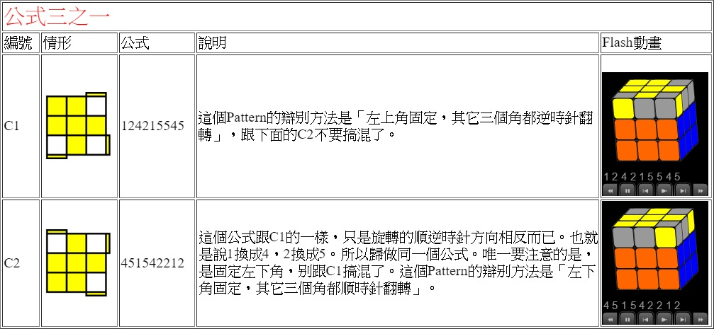
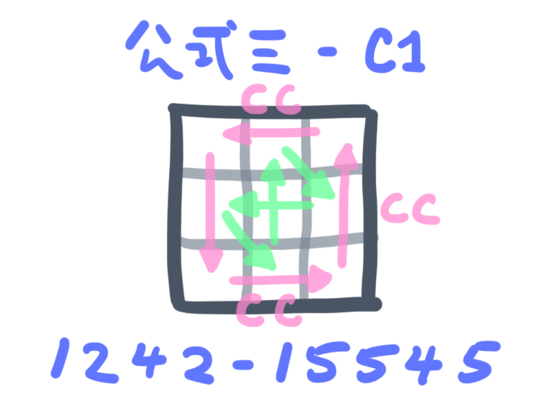
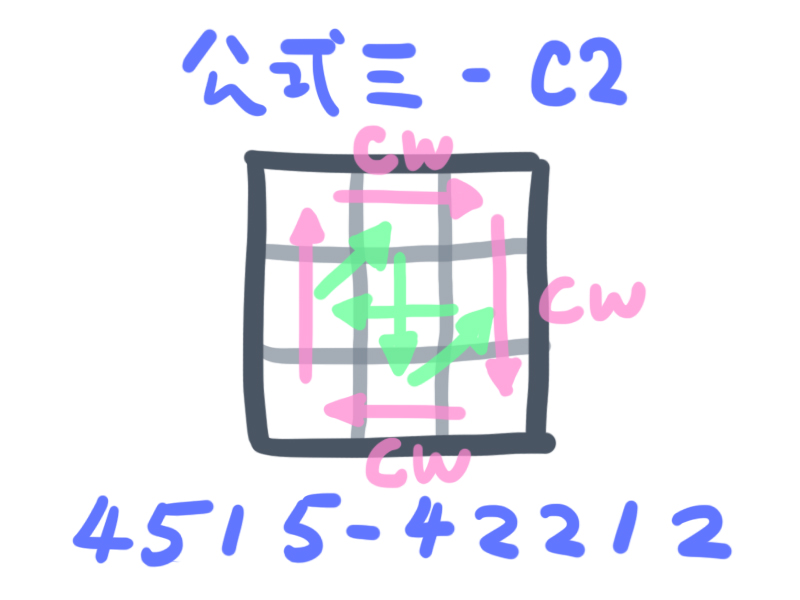
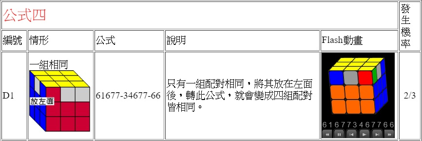
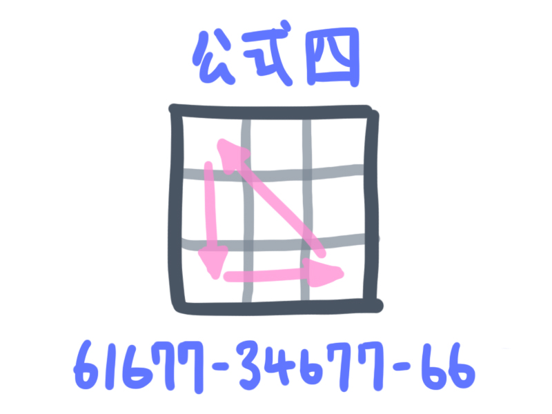
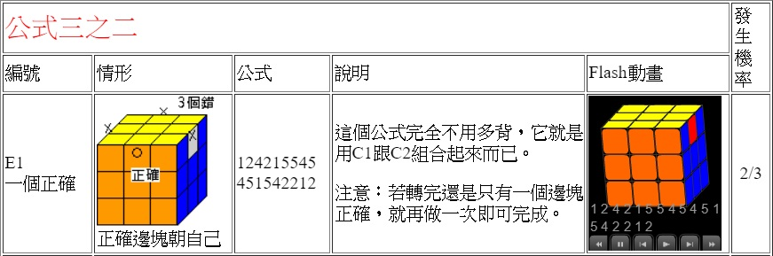
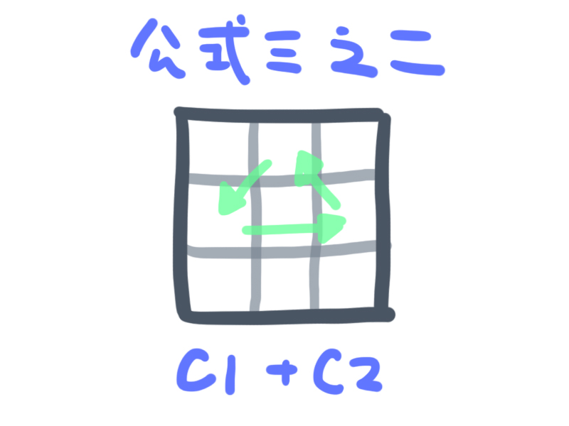

網路上有許多解魔術方塊的方法，讓我們來看看這些步驟到底對魔術方塊有甚麼影響：
我們來看第三層的解法(採用這個網頁的標示法)
我們來把每一種解法的影響都畫出來看看。(CW=角塊順時針旋轉 | CC=角塊逆時針旋轉 | F=邊塊翻面)
I. 頂部轉出十字

II. 翻三角(魚頭)


III. 換三角

IV. 換三邊

了解這些，可以使我們的程式設計的更有效率。我們不一定要讓程式去跑這麼多的轉動步驟，只要把結果確定了，直接用方塊交換的方法達到轉完後的結果。說不定可以增加效率。